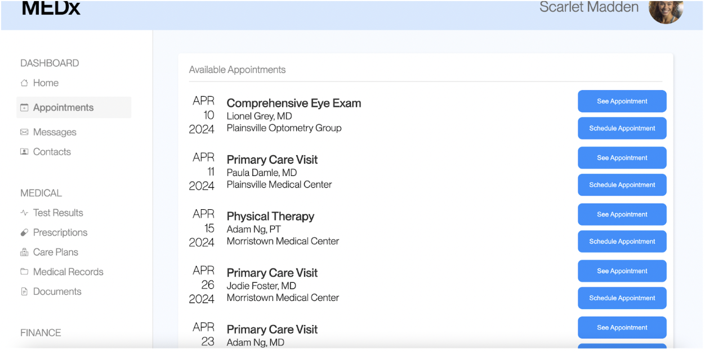

Part 1: Project Overview
For this project, I was given a sample website with many obvious design flaws. The objective of this project was to examine how user research, in particular, A/B statistical tests, can impact design decisions. My goal was to examine if minor changes to the design of a website would result in a more effective user experience. A/B testing helps one gauge the effectiveness of the changes in several ways: it is able to test the impact of specific design choices by keeping a control version of the website, and gives one quantitative data in order to determine if the design changes can give one statistically significant results.
In an in-class activity, I modified the website so that the buttons to create and see the appointments were brighter and more vibrant, darkened the font that shows the appointment information, and bolded the date font. The text edits were done because the original ones were a light grey color that did not contrast well with the white background, the bolding was done for visibility, and the buttons were changed so that they did not appear deactivated.
Continuing the in-class activity, a section of our class tested my modified version of the website. Their objective was to book an appointment with a specific doctor and location: Adam Ng, on April 23rd in Morristown. I used this data as the 'B' data for the resulting analysis, and the data for the 'A' version was provided to us by the instructors.
Part 2: Analysis
I was assigned to create null and alternative hypotheses for the misclick rate (or how frequently users clicked the wrong button), the time on page (or the time in milliseconds it takes to complete the task), and a metric of our own choice. I chose time to first click, or the time in milliseconds it took for the user to execute the first click.
Misclick Rate:
Null hypothesis: The misclick rate is the same for both the A and B versions of the site.
Alternative hypothesis: The misclick rate has a statistically significant difference between the A and B versions of the site.
Prediction: I predict that misclick rate will be significantly different on the B version of the site, thus rejecting the null hypothesis. I suspect this because one of the changes that I made was to make the colors of the appointment buttons brighter, so their function is more evident to the user. Thus, I predict people will click with more accuracy.
A/B Test Results:
I chose to test the misclick rate using the chi-squared test. I chose this metric because the misclick rate is a discrete variable, a boolean that indicates if the user pushed a button external to the task. I tested the two sets of data and obtained the following results:
chi^2: 4.746923077
P-value: 0.0293507311
This test obtained a p-value of less than 0.5, which indicates that there is a significant difference between the observed frequencies and the frequencies that would be expected under the null hypothesis. Additionally, the chi-squared value of 4.746923077 supports a highest magnitude of deviation, which further supports the claim that there is a statistically significant difference between the misclick rate on both versions of the site. Through my own calculations, I concludeded that 48% of the users misclicked on version A of the site, whereas only 19% misclicked on version B of the site.
Therefore, I can confidently reject the null hypothesis in favor of the alternative one, which claims that the difference between the misclick rates of both website is statistically significant.
Time on page:
Null hypothesis: The average time spent on the page is the same for both of the A and B versions of the site.
Alternative hypothesis: The average time spent on the page is significantly lower on the B version of the site.
Prediction: I predict that I will reject the null hypothesis in favor of the alternative hypothesis, and that the time spent on the page will be lower on the B version of the site. I predict this because the changes that I made to the site, making the font for the appointment information bolded and darker, and making the buttons higher contrast, make it so the user is able to see the information easier and thus perform actions quicker.
A/B Test Results:
I chose to test the time on page metric using a one tailed t-test. I chose this test because the time-on-page metric is a continuous variable, and I am testing to see if variable A is larger than variable B. Therefore, a one-tailed t-test best suits my needs. I tested the two sets of data and obtained the following results:
Average of A: 36139.45833
Variance of A: 212313712.7
Average of B: 8624.64
Variance of B: 16757817.49
Degrees of freedom: 26.47192612
T-score: 8.919141692
P-value of A < B: 0.9999999991
As seen from the data, the average or mean of A (36139.45833) is much larger than the average of B (8624.64). This indicates that the user spends, on average, longer on page A than they do on page B. Additionally, the p-value that the values of A are smaller than B is larger than 0.05, which indicates that it is false in a statistically significant manner.
Therefore, I have rejected my null hypothesis that the average time spent on both A and B versions of the page is the same, and drawn a conclusion based on the mean values that supports my alternative hypothesis that asserts that the time-spent-on page is lower on the b version of the site.
Time to first click:
Null hypothesis: The average time to first click is the same for both the A and B versions of the site.
Alternative hypothesis: The average time to first click is significantly lower on the B version of the site.
Prediction: I predict that I will reject the null hypothesis in favor of the alternative hypothesis, and the average time to first click will be lower on the B version of the site. I predict this because the changes I have made to the website, such as darkening and emphasizing the colors of the text and buttons, make it so that the user will be able to recognize the details of their task quicker and thus perform it faster.
A/B Test Results:
I chose to test the time to first click metric using a one-tailed t-test. I chose this test because the time-to-first-click metric is a continuous variable, and I am testing to see if variable A is larger than variable B. Therefore, a one-tailed t-test suits my needs. I tested the two sets of data and obtained the following results:
Average of A: 14476.875
Variance of A: 70695020.29
Average of B: 4644.64
Variance of B: 5549925.073
Degrees of freedom: 26.45343404
T-score: 5.524405088
P-value of A < B: 0.9999960025
As observed from the data, the average or mean of A is significantly larger than the average of B. This indicates that the user spends, on average, much less time before they click on the page for the first time. Additionally, the p-value that the values of A are smaller than B is larger than 0.05, which indicates that the presumption is false in a statistically significant manner.
Therefore, I have rejected my null hypothesis and drawn a conclusion based on the mean values that supports my alternative hypothesis that asserts that the time-to-first-click is lower on the B version of the site.
Part 4: Summary Statistics
Misclick Rate:
Through testing, I concluded that I could reject my null hypothesis in favor of my alternative hypothesis, which simply asserted that the differnce in misclick rates was statistically significant. However, based on my calclulated rates of user misclicks-- 48% of users misclicked on version A of the site versus 19% misclicking on version B-- I have drawn a further conclusion that the misclick rate is lower on version B of the website.
Time on Page:
The following are some relevant statistics:
| Metric | Version A | Version B |
|---|---|---|
| Median | 34972 | 3681 |
| Variance | 212313712.7 | 16757817.49 |
| Average | 36139.45833 | 8624.64 |
A common pattern of duration that emerges from these statistics is the fact that across all metrics, the values for website A are much higher. This indicates several conclusions. First, that the average time the user took to complete the task on version A was higher, thus indicating website A is less effective to use. Second, the variance of the data on version B was lower, suggesting that the users consistantly took similar amounts of time to complete the task, as opposed to the higher varience of website A. This also indicates efficiency and consistancy on website B's part. Finally, the median of A is much higher than the median of B, further suggesting that users of website A took much longer to complete the task than on website B. Altogether, these metrics indicate that users could navigate version B faster, suggesting that it is more efficient.
Time to First Click:
The following are some relevant statistics:
| Metric | Version A | Version B |
|---|---|---|
| Median | 11085 | 3681 |
| Variance | 70695020.29 | 5549925.073 |
| Average | 14476.875 | 4644.64 |
These statistics inform us that across all metrics, the values for website A continue to be are much higher. This indicates several conclusions. First, that the average time the user took to click website A was higher, thus indicating website A is less clear in its functions. Second, the variance of the data on version B was lower, suggesting that the users consistantly took similar amounts of time to click the website, as opposed to the higher varience of website A. This also indicates clarity and consistancy on website B's part. Finally, the median of A is much higher than the median of B, further suggesting that users of website A took much longer to click on website B. Altogether, these metrics also indicate that users could navigate version B faster, suggesting that it is an easier and more efficient website to use, and that its functions are clearer.